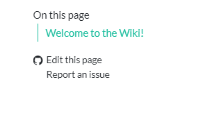
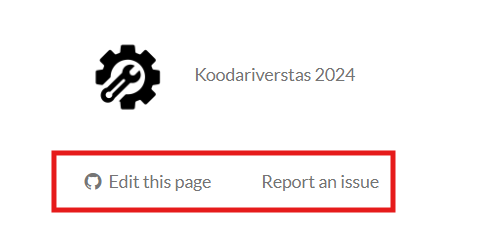
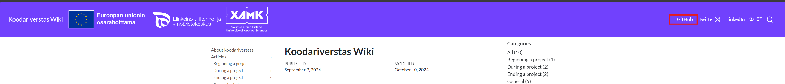
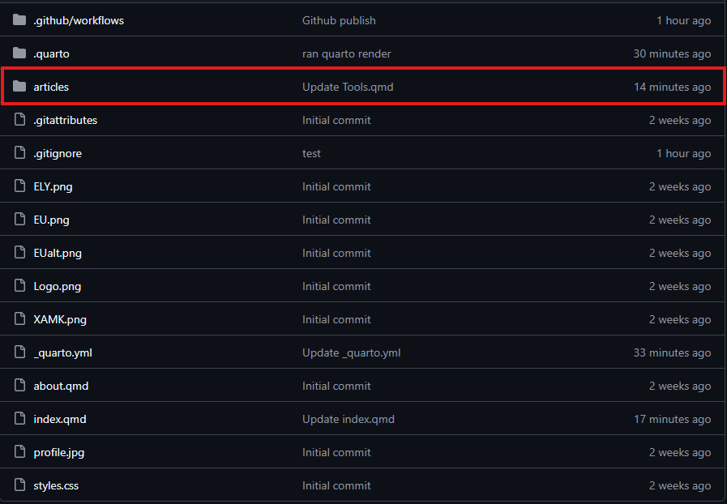
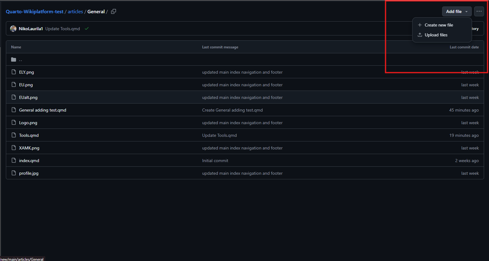
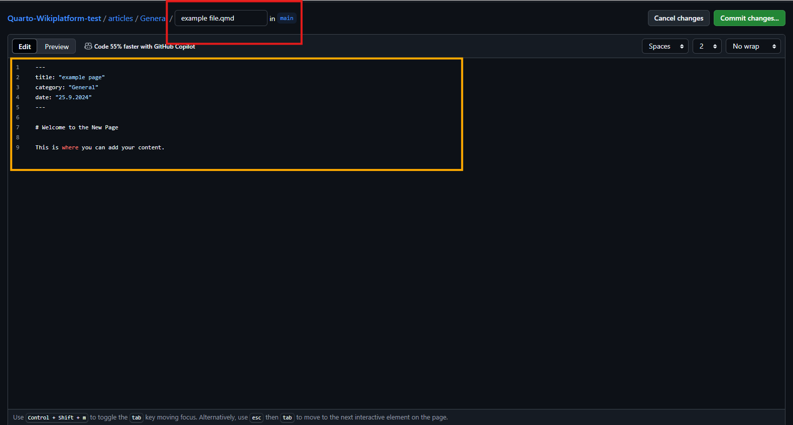

Adding and Editing pages
This article will teach you how to add pages and edit existing pages in our Wiki. This might be useful when you want to document your findings or want to add a component you made to the library of components that everyone can freely use.
Editing existing pages and reporting issues.
On the bottom of every page, you will find the “Edit this page” and “Report an issue” buttons. Edit this page lets you edit the current page you are on and Report an issue lets you report any issues you might come across. If you are a student “Edit this page” will notify you about the requirement of forking your own branch for modifications. Reporting an issue opens up a new GitHub issue for the team to see.

When a page has the integrated navigation bar on the right. The GitHub actions can be found on the bottom of the navigation element.

If a site doesn’t have the right navigation element, these buttons can be found in the footer of the page.
Adding a new page
When adding a new page to the wiki, head to the GitHub repository (Link located at the top right of the page).

Inside the GitHub repository find the “articles” folder. Inside the articles folder find the category folder where you want to add your article. If you want to edit an article instead, simply head to the article you want to edit, and edit the .qmd file of the article.
Note: Please refrain from modifying articles written by other people. If you still think that an article requires modifications, please ask the user in the articles “author” section for permission to modify their work, if you make changes, add yourself to the authors list of the article. You can find other users in the repository user list.

After choosing a folder suitable for your article, you can add a .qmd file directly in GitHub. A .qmd file is automatically formatted and added to the hosted website, they are also sorted by category and inserted into the websites search function.
Note: Quarto MarkDown (.qmd) and regular MarkDown (.md) are different file formats. If you have imported a file from a markdown editor, please make sure to change the file to .qmd before adding it to the wiki.

To add a .qmd file simply add .qmd in the file name when finalizing your file (Red box in the image below). When adding content be sure to integrate required metadata from the following code block:
---
title: "Example title (This is the title you want the reader to see and "interact" with)"
categories: [example category] ## Current categories are: Beginning a project, During a project, Ending a project, General (Categories are case sensitive)
date: "9.25.2024" ## date and time format is MM.DD.YYYY
author: Firstname Lastname, Firstname Lastname ## Author/authors of the article.
date-modified: last-modified ## This adds an automatic last modified field to the article, last-modified function will automatically add the correct date when a modification is made to the article.
toc: true ##this adds an automatic Table-Of-Content for your article.
---The wiki supports full markdown and lets you have total control over the content of your article. We recommend using a simple markdown editor such as StackEdit (You can also read our article on the basics of StackEdit here).
The orange area in the image shown below is your “article” section. This section has to include the metadata at the top of the section for the article (Otherwise your article WILL NOT be indexed and won’t be rendered to the wiki)! After you have included the metadata section, you are free to write and format whatever you wish in the main article.
Note: You are responsible for the content you write in your article. It is your responsibility to fact check and reference others work correctly. All articles are moderated and checked for disruptive content before they are published in the wiki.

When you feel like your article is ready to publish, simply press the green “Commit Changes” button in github.
If you are a part of Koodariverstas staff, you have the permissions to directly push changes to main.
Note: When a staff member is pushing their changes GitHub will give you the option to bypass the rules and push directly to main.
Adding and editing pages as a student
If you are a student working in a project and want to edit or publish an article, you need to create your own branch for the changes you have made. Your branch will be sent automatically for review when you push your changes. When your changes are approved by an administrator your changes will be automatically updated to the wiki and your branch will be deleted.
There are a few ways of managing your branches. Here are two options we recommend for everyone regardless of their technical knowledge and experience with GitHub.
Direct GitHub
When adding directly through GitHub you will be prompted when committing to create a new branch for your changes.

Select the “create a new branch” option from the selection. This will make a new branch for your changes and send an automatic request for review for administrators.
Note: You will not be able to commit directly to main as a student. Even if you get the option to commit to main, you will get an error message saying that your commit has been blocked.
GitHub Desktop
Alternatively you can use the GitHub desktop app for creating a new branch. GitHub desktop lets you create and manage you branches directly in the app making it easy to keep track of your branches and changes.

GitHub desktop lets you manage your branches and the cloned repository with ease. These are the options we recommend you use when adding or editing content. There are other ways of managing your branches, but these are the ones we recommend for everyone.
Managing branches directly through VS codes version control is also an option, but we have noticed that VS code has some trouble with sending requests directly to GitHub causing some pull requests to simply never show up to the administrators.
Note: In both cases (Staff and Student) when your push is completed your article will be pushed to the wiki automatically. It will take a minute or two for your article to show up correctly on the web page.